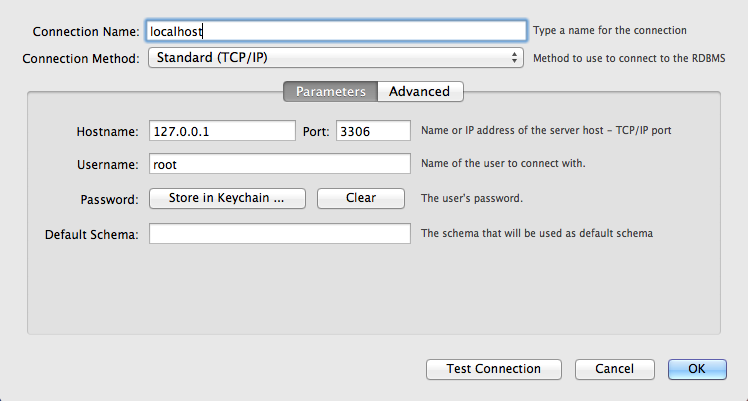
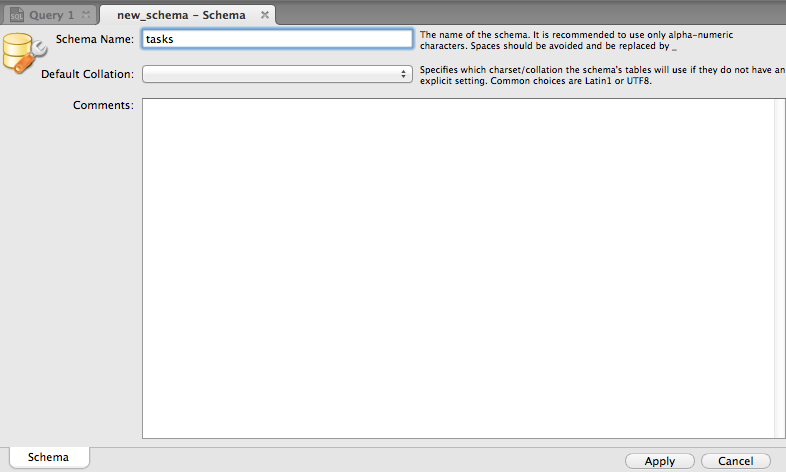
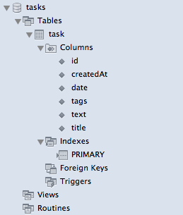

Les bases de données relationnelles sont les plus répandues en production.
Elles ont survécues aux bases de données objets et aux bases xml.
Mysql et postgreSQL sont 2 bases libres open source simples populaires.
Il y a quelques années, Mysql a été racheté par Oracle.
L'installation de Mysql est simple, il suffit de suivre les instructions disponibles sur www.mysql.fr/
Une fois installée, il suffit de démarrer mysql.
Afin de pouvoir gérer la base de données mysql, on récupère MySQL Workbench sur le site de mysql.
Une fois le workbench lancé, on crée une nouvelle connexion sur localhost

On se connecte sur le serveur en local et on demande la création d'un nouveau schéma.

Le schéma tasks existe et il ne contient aucune table.
On crée la branche mysql à partir de la branche master.
> git checkout master Switched to branch 'master' > git checkout -b mysql Switched to a new branch 'mysql'
La première chose à faire est de rajouter le driver mysql.
<dependency>
<groupId>mysql</groupId>
<artifactId>mysql-connector-java</artifactId>
<version>5.1.33</version>
<scope>compile</scope>
</dependency>
Dans notre application, la définition de la connexion à la base est pour le moment :
<!-- pool de connexion -->
<bean id="dataSource" class="org.apache.commons.dbcp.BasicDataSource" destroy-method="close">
<property name="driverClassName" value="org.apache.derby.jdbc.EmbeddedDriver"/>
<property name="url" value="jdbc:derby:target/taskdb;create=true"/>
<property name="username" value=""/>
<property name="password" value=""/>
</bean>
<!-- factory bean pour la SessionFactory hibernate -->
<bean id="sessionFactory" class="org.springframework.orm.hibernate4.LocalSessionFactoryBean">
<property name="dataSource" ref="dataSource" />
<property name="hibernateProperties">
<bean class="org.springframework.beans.factory.config.PropertiesFactoryBean">
<property name="properties">
<props>
<prop key="hibernate.dialect">org.hibernate.dialect.DerbyTenFiveDialect</prop>
<prop key="hibernate.hbm2ddl.auto">create-drop</prop>
</props>
</property>
</bean>
</property>
<property name="packagesToScan" value="fr.todooz.domain"/>
</bean>
Pour mysql, l'url est de la forme :
jdbc:mysql://host:port/dbname
Pour se connecter sur notre base fraîchement créée, on a donc la configuration suivante.
<!-- pool de connexion --> <bean id="dataSource" class="org.apache.commons.dbcp.BasicDataSource" destroy-method="close"> <property name="driverClassName" value="org.apache.derby.jdbc.EmbeddedDriver"/> <property name="url" value="jdbc:mysql://localhost/tasks"/> <property name="username" value="root"/> <property name="password" value=""/> </bean>
Il faut également changer le dialect hibernate en :
org.hibernate.dialect.MySQL5Dialect
Si on redémarre, notre application est connectée à la base mysql et elle a créée les tables.
Sous le workbench, on peut voir notre table.

Afin de se connecter à d'autres bases, il suffit d'avoir le driver et la bonne url jdbc.
Hibernate et jdbc permettent de s'abstraire de beaucoup des différences existantes entre les bases.
Actuellement, le schéma de la base de données est mis à jour au démarrage de l'application.
<prop key="hibernate.hbm2ddl.auto">update</prop>
Lorsque l'on ajoute des attributs au model, les colonnes sont automatiquement crées.
De même, lors de la suppression, la base perd des colonnes.
En production, perdre une colonne au déploiement d'une nouvelle version peut être désastreux.
Pour ne pas faire d'erreur, on passe donc le hbm2ddl (Hibernate model to data definition language) en validate.
<prop key="hibernate.hbm2ddl.auto">validate</prop>
Oui mais comment demander a hibernate de nous aider quand même un peu lors de mise à jour ?
En fait, on peut utiliser le code d'hibernate pour générer le sql nécessaire.
Configuration configuration = new Configuration();
configuration.addAnnotatedClass(Task.class);
for (String string : configuration.generateSchemaCreationScript(new MySQL5Dialect())) {
System.out.println(string + ";");
}
Il est facile de placer ce code dans un main ou un test unitaire afin de générer le code avec le bon dialect.
On obtient le code ddl (Data definition language) suivant que l'on pourrait exécuter via le workbench.
create table task (
id bigint not null auto_increment,
createdAt datetime,
date datetime not null,
tags varchar(255),
text varchar(4000),
title varchar(255) not null,
primary key (id)
);
Ainsi, lors de mises à jour, on peut maitriser ce que l'on fait et transmettre ces informations à un DBA.
Jdbc utilise une url afin de désigner une base de données. Il est alors simple de pointer vers une base ou une autre.
Avec hibernate, théoriquement, il est aussi simple de changer de mysql vers posgres ou oracle.
Mais il faut également penser aux différents environnements dans lesquels notre application pourra tourner : développement, QA, prod...
En utlisant jndi en plus de jdbc, on déporte la configuration de la base de données à l'extérieur de notre application.
C'est dans le serveur que l'on configure jdbc.
Notre application en devient donc plus portable.